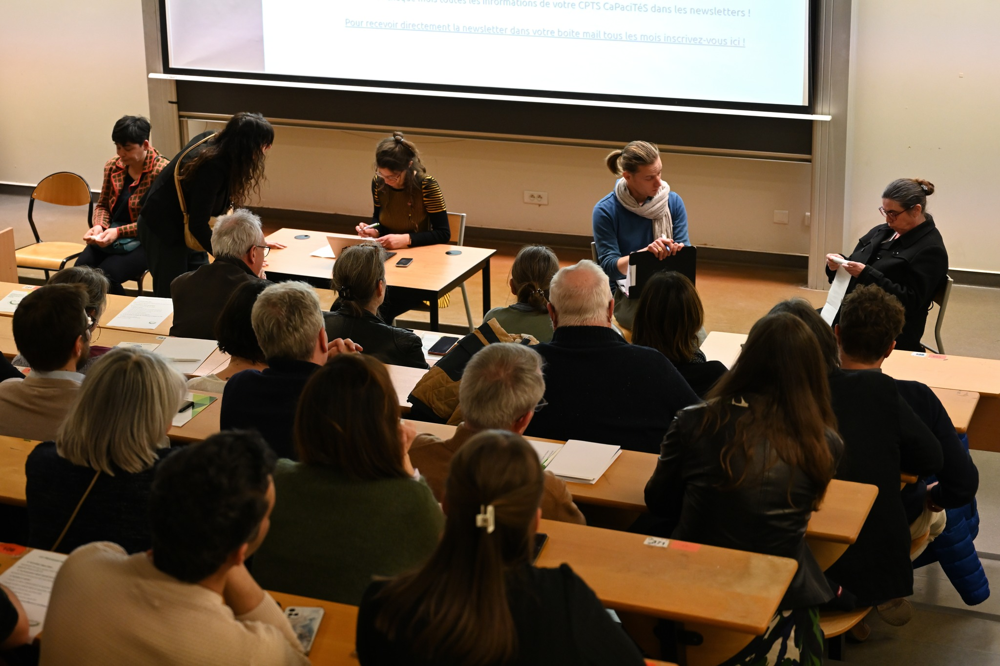
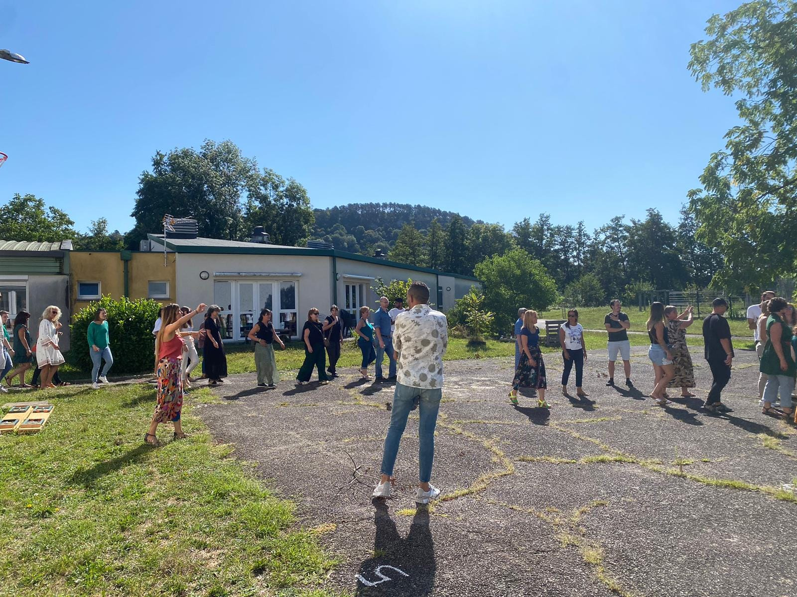
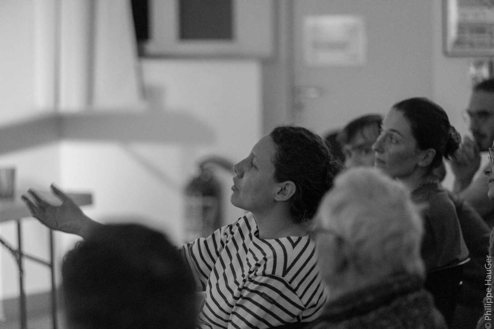
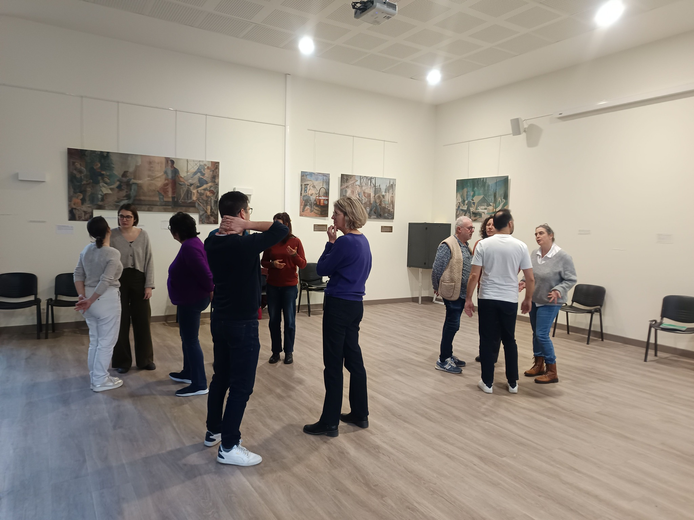

À un public de 5 à 99 ans !
Pour toutes les personnes qui cherchent à expérimenter, à se dépasser et à enrichir leur quotidien :

Des formats adaptés à tous les besoins, du premier atelier découverte jusqu'à la formation de formateurs.
Durée : 1h30 à 4h
Jeux et dynamiques issus du théâtre de l'opprimé. Une première entrée dans l'univers du théâtre forum, accessible à tous.
Possibilité de créer des saynètes à partir de vos témoignages et de vivre une première expérience de spect'Acteur·rice.
Le samedi matin, une fois par mois, la troupe se retrouve aussi pour pratiquer le théâtre forum, construire ensemble des scènes et les jouer devant un public.
Demander un devis

Durée : 10h à 20h
Cycle de plusieurs ateliers :
Restitution sous la forme d'un spectacle de théâtre forum joué par les participant·es, éventuellement devant un public.
Demander un devisStages et formations pour s'approprier le panel des techniques issues du théâtre de l'opprimé. Parvenir à créer des spectacles forum avec les publics que vous accompagnez.
Sous forme de stages les week-ends ou selon les besoins de vos équipes. Différents niveaux de stage sont proposés.
Demander le programme